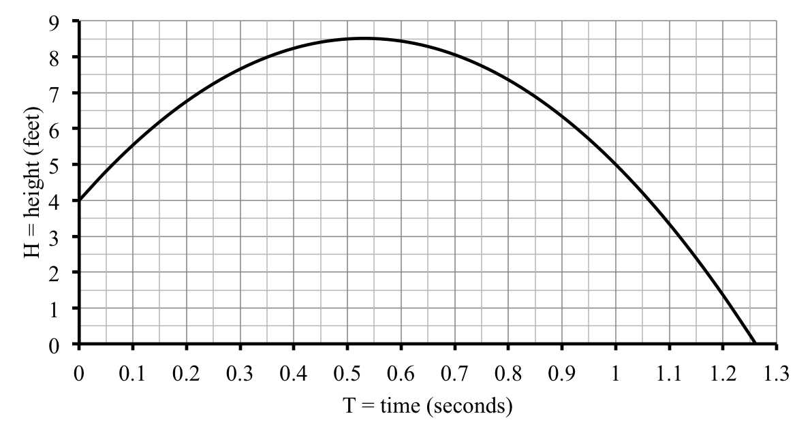

Try taking this version of the practice exam under testing conditions: no book, no notes, no classmate’s help, no electronics (computer, cell phone, television). Give yourself two hours to work and wait until you have tried your best on all of the problems before checking any answers.
1.
I love coffee. But not when it gets cold. The graph shows how my cup of coffee cools.
(a)
Identify the variables, including units and dependence.
(b)
Answer each question and indicate the point on the graph you use.
(i)
How hot is my coffee right after I pour it (before it starts cooling)?
(ii)
I simply will not drink my coffee once it is cooler than 150°F. How long does it take for my coffee to cool off that much?
(iii)
I prefer to drink my coffee between 160°F and 180°F. What is the corresponding time period during which I should drink my coffee?
2.
Jolene is driving up to Duluth to visit her aunt. Unfortunately it is snowing so traffic is going slowly. Her distance \(D\) miles to Duluth is described by the equation
\begin{equation*}
D=100-45T
\end{equation*}
where \(T\) is the time in hours since 12:00 noon when Jolene started driving.
(a)
Identify the intercept, including units, and explain what it means in the story.
(b)
Identify the slope, including units, and explain what it means in the story.
(c)
Jolene plans to call her aunt once she is under 20 miles from Duluth. When will that be? Show how to set up and solve an inequality to answer the question. Find the exact time, to the nearest minute.
3.
There sure are a lot of squirrels in my neighborhood. The equation
\begin{equation*}
S = 4,000\ast 1.12^T
\end{equation*}
estimates the number of squirrels (\(S\)) where \(T\) is the time in years since 2005.
(a)
Make a table showing the number of squirrels in 2005, 2008, 2013, and 2017.
(b)
Draw a graph showing how the squirrel population grew.
(c)
The problem continues ...
Approximately when will the population pass 10,000 squirrels? Guess from the graph. Then refine your answer using successive approximation.
(d)
Show how to solve the equation to determine exactly when there will be 10,000 squirrels.
(e)
There were 10,000 squirrels in 2011, so our equation is a bit off. Assuming there were still 4,000 squirrels in 2005, revise the equation. Hint: find the new growth factor.
4.
Gail calculated that the number of calories \(C\) in a cube of fudge depends on how large the cube is, say \(E\) inches long on each edge. A possible equation is
\begin{equation*}
C = 90E^3
\end{equation*}
(a)
How many calories are in a cube of fudge that is 1 inch on each edge?
(b)
What size cube of fudge has 200 calories? Answer to the nearest tenth (that means to 1 decimal place), showing work to justify your answer.
You may use successive approximations or the appropriate formula.
(c)
Convert your answer to millimeters (mm) using \(1 \text{ inch} \approx 2.54 \text{ cm and }1 \text{ cm} = 10 \text{ mm}\text{.}\)
Test-taking tip: No answer for part (b)? Write down a guess and convert that.
5.
The height \(H\) feet of a ball \(T\) seconds after it is thrown straight up in the air is given by the equation
\begin{equation*}
H = 4+17T-16T^2
\end{equation*}

(a)
According to the equation, how high up was the ball to start, after 0.5 seconds, and after 1 second? Use the equation to evaluate and check against the graph.
(b)
Calculate the speed (rate of change) between 0.7 seconds and 0.8 seconds.
(c)
The problem continues ...
Convert your answer from part (b) to mph. Use 1 mile = 5,280 feet.
Test-taking tip: No answer for part (b)? Write down a guess and convert that.
(d)
When will the ball hit the ground? Find the answer to the nearest hundredth (that means to 2 decimal places), showing work to justify your answer.
You may use successive approximations or the appropriate formula.
6.
A local sporting goods store does custom embroidered jerseys for $29 each plus $1.75 per letter. Or you can order the same jerseys online for $18 each plus $2.35 per letter, but it costs another $4.95 for shipping per jersey. If we write \(L\) for the number of letters on the jersey and \(T\) for the total cost (in $), then those equations are
\begin{equation*}
\textbf{Local shop:} \quad T = 29 + 1.75L
\end{equation*}
\begin{equation*}
\textbf{Online:} \quad T = 22.95+2.35L
\end{equation*}
(a)
If a player named Redeisheimer (12 letters) wants a jersey, which option costs least?
(b)
Make a table showing the cost for players named: Buls (4 letters), Schaaf (6 letters), and Johnston (8 letters).
(c)
Set up and solve a system of equations to determine when the options cost the same.
(d)
Summarize your findings in words.
(e)
The problem continues ...
Graph both functions on the same set of axes. Don’t forget 0 letters.
(f)
Indicate the point on your graph where you can check your solution to part (c). If it doesn’t agree, check your work and/or your graph again.
7.
For their holiday party at the office, Adriana had a tray of 200 empanadas delivered for $196. They were so good that she had a tray of 72 empanadas delivered to bring to her sister’s house on Christmas Eve, which cost $78.24. Assume that the total cost is a linear function of the number of empanadas.
Test-taking tip: Note sure about parts (b) and (c)? Try finding the equation first.
(a)
Name the variables, including units and dependence.
(b)
What does each empanada cost?
(c)
What is the delivery charge?
(d)
Write an equation for the function.
8.
Light rail fares are currently $3.00 per ride during rush hour. Two different plans of increasing fares are being debated: 15¢ per year or 4.5% per year.
(a)
Name the variables, including units and dependence.
(b)
Write an equation describing light rail fares over the next few years, assuming they increase 15¢ per year. What is this type of function called?
(c)
Write an equation describing light rail fares over the next few years, assuming they increase 4.5% per year. What is this type of function called?
(d)
The problem continues ...
Compare what each equation tells you light rail fares would be in 1 year, 5 years, and 20 years. List your answers in a table.
(e)
Graph both options on the same set of axes. Don’t forget now.